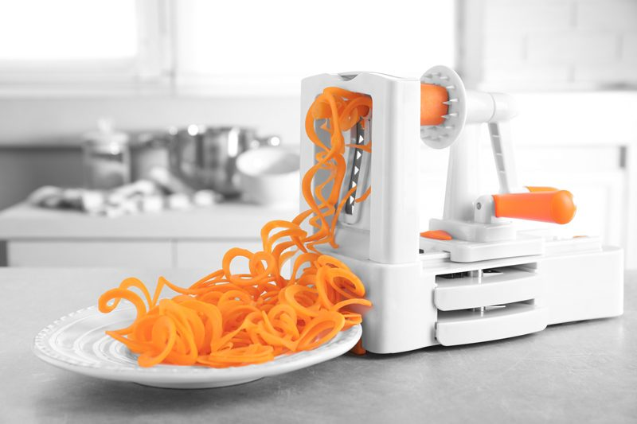

Spiralizer (Manual) – Why and What I Recommend
So, what exactly is spiralizing? Is it when you feel like your life is spiraling out of control? Nope. It is the art of turning vegetables and fruits into noodles.
I have been making veggie noodles since 2014. Once I started, I have never stopped. Everyone touted them as an excellent replacement for spaghetti noodles, but I think they are so much more than that. They are versatile, flavorful, nutritious, come in many shapes, colors, and let’s not forget that they are fun and easy to make.

Spiralizing is fun for both adults and supervised children!
These machines are so easy to use that your children could be making the noodles while you are preparing the sauce! Just make sure that they are supervised and don’t cut themselves. I have had numerous people share with me that they usually don’t care for zucchini yet they end up loving the noodles. Never underestimate plant power! You can spiralize about any root vegetable and turn a not so exciting veggie into something extraordinary!
Why Do I Want a Spiralizer?
Mount your fruit or vegetable on the spiralizer, turn the handle and watch as ribbons, strands, and shreds appear right before your eyes. You can create healthy and visually appealing meals in minutes. I feel that a spiralizer is the perfect addition to anyone’s kitchen and for me personally, it is a MUST have. Spiralized noodles can be eaten raw or cooked. I have an entire category dedicated to veggies noodles. Click (here) to see the variety of noodles you can make!
My favorite manual unit so far is the Paderno World Cuisine 3-Blade Vegetable Slicer / Spiralizer which is for right-handed people. I am a lefty and to be honest when I first started using a spiralizer all those years ago I never knew that they came left or right-handed. I knew I struggled with the unit, but it took a while for me to realize that I was using it with the wrong hand. I have now grown accustomed to using it, much like I was forced to learn to cut with a pair of scissors with my right hand.
Traveling Spiralizer
Throughout time and in my travels, I have tested a LOT of handheld spiralizers. Some were plain garbage, and others were just ok. They can work in a pinch if you want to travel with one in your suitcase. What? Do you find that odd? (hehe) Not me, I pack such things. I set myself up for success no matter where I go. Toothpaste – check. Socks – check. Purse – check. Spiralizer – double-check. I will list the one that I recommend down below. The one that I use comes with a drawstring pouch and cleaning brush. Compact and ready to go, no passport needed.
Selecting a Spiralizer
Many determining factors come into play when deciding which unit to purchase.
- Size – they come in many different sizes.
- Cost – they range in price.
- Right or Left Handed – most units are made for right-handed people. So if you are a lefty, make sure it will work for you. Keep the receipt. You can usually return them.
- Most units come with multiple noodle-making blades. I’ll briefly review what they do below.
- The Counter Clamps secure the spiralizer to your countertop, offering increased leverage and ease of spiralizing.
Shredder Blade
- This versatile blade produces spiral strands that closely resemble the thickness of spaghetti.
- Use these strands for soups, salads, wraps, stir-fry, and pasta replacement.
Straight Blade
- This blade can be used to produce long ribbons, shreds, or c-cuts and half slices.
- Spiralize an entire head of cabbage for quick and easy coleslaw, create long ribbons for a beautiful salad or slice into one or both sides of a vegetable to create slices.
Chipper Blade
- The chipper blade produces strands that are thicker than the shredder blade, and are great for thick curly strands.
Noodle Friendly Produce:
- Apple
- Beet
- Bell Peppers
- Broccoli Stems
- Butternut Squash
- Cabbage
- Carrot
- Celeriac
- Chayote
- Cucumber
- Daikon Radish
- Jicama
- Kohlrabi
- Onion
- Parsnip
- Pear
- Plantain
- Radish, black
- Rutabaga
- Sweet Potato
- Taro Root
- Turnip
- White Potato
- Zucchini + Summer Squash
Tips and Tricks
- Most noodles can last up to five days in the refrigerator and can be frozen for about a month. Any longer and I find that the noodles start to lose their flavor.
- Always select FIRM yet ripe produce. Floggy, soggy, bruised veggies or fruit won’t hold up.
- If spiralizing veggies or fruits that have seeds in the core (zucchini, apple, etc.) be sure to line the center of the item up with the machine, this will cause the seeds to push through the corer hole.
- The item cannot be hollow, seeded, or have a tough core.
- They should be at least 1 1/2″ in diameter and 2″ long for the best experience.
Let’s Go Shopping
My Recommendations: (prices subject to change)
Ambidextrous:
Right-Handed Only:
Nouveauraw.com is a participant in the Amazon Services LLC Associates Program, an affiliate advertising program designed to provide a means for us to earn fees by linking to Amazon.com and affiliated sites – at no extra cost to you.
Thank you for your support! amie sue
© AmieSue.com